Mysterien
GrundregelwerkEinführung

Der Tanz der TräumeUpsala
Seasons of MysteryMysteriensammlungVorwort

Ein Tanz mit dem TodFrühling · Dalarna

FeuerherzSommer · Småland
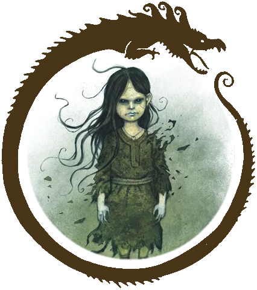
Der Teufel im MoorHerbst · Jütland

Ein WintermärchenWinter · Ingermanland
A Wicked SecretMysteriensammlung
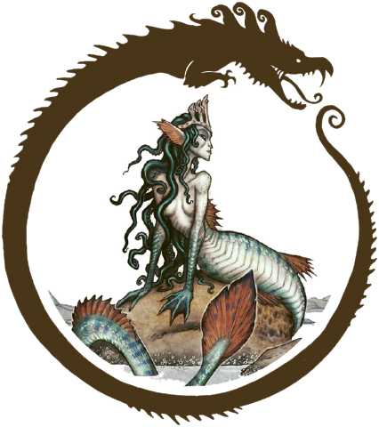
Das Silber des Meeres
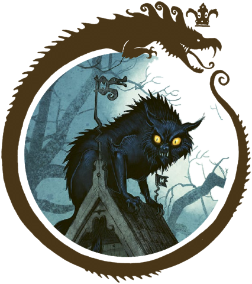
Ein böses Geheimnis
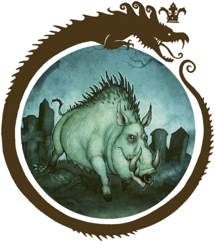
Die Nachtsau
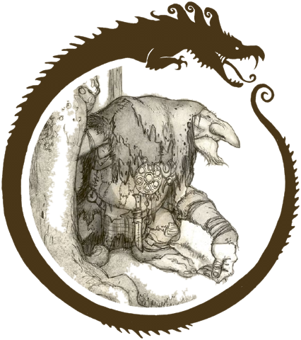
Das Lied vom fallenden Stern
City of My NightmaresKampagne · StockholmEinführung
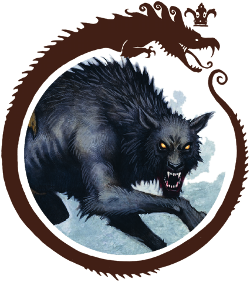
1Witterung eines Mörders
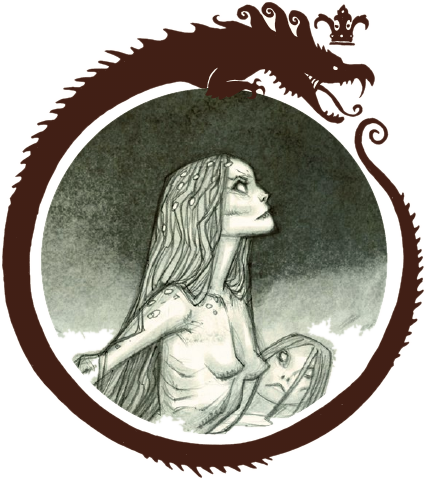
2Lied an den Mond
 3
3Die Spukbibliothek
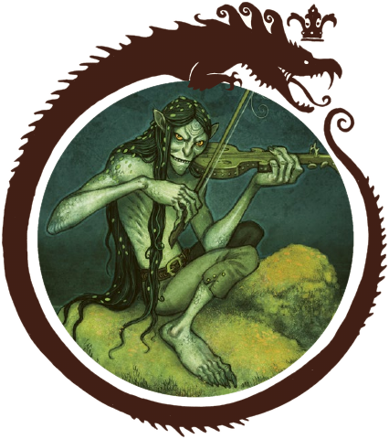
4Stadt meiner Albträume
The Lost Mountain SagaKampagne · LapplandEinführung
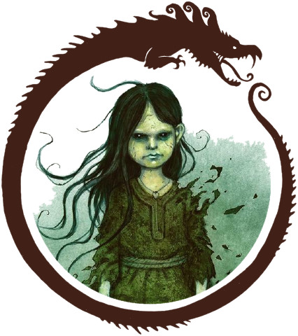
1Pflicht und Verzweiflung
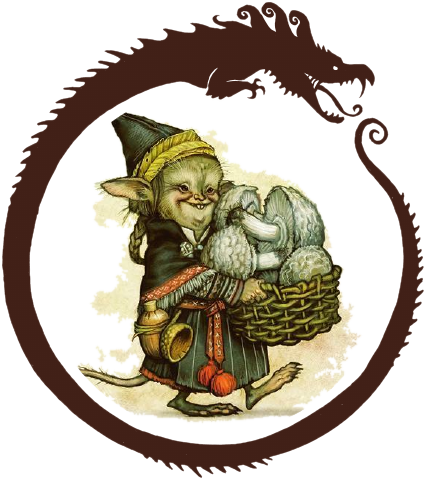
2Der Beginn des Falls
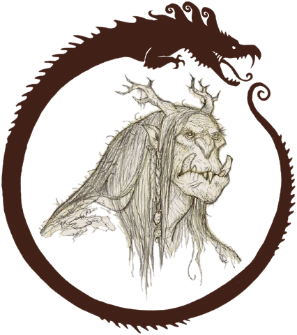
3Wo die Sonne stirbt
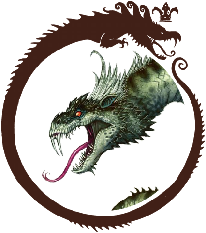
4Der Prinz und die Hexe
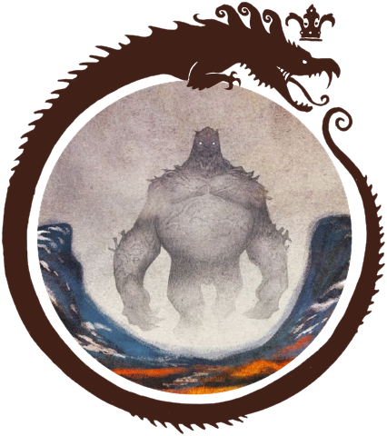
5Die Saga vom verlorenen Berg